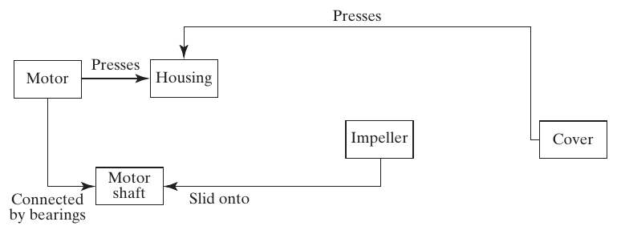
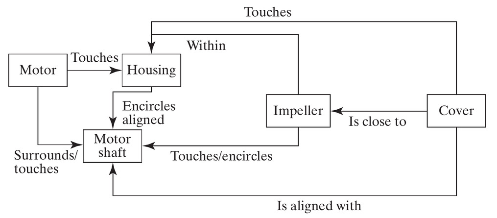
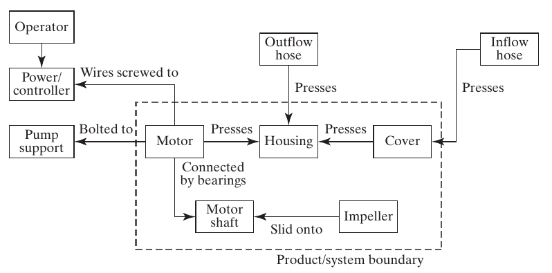

Form
Systems Architecture · Chapter 4
Starting Part 2: Analysis of System Architecture
- Part 2 applies architectural analysis to progressively larger systems
- We begin with form, the most concrete aspect of a system, and work toward function (Ch. 5) and their mapping into architecture (Ch. 6)
- Reverse engineering starts with an existing architecture and analyzes it. This prepares us to design new architectures later
Course modeling language
This text follows Dov Dori’s Object-Process Methodology (OPM) throughout, our method for representing architecture.
Table 4.1 · Questions for Defining Form
| Question | Produces |
|---|---|
| 4a. What is the system? | An object defining the abstraction of form |
| 4b. What are the principal elements of form? | The first- and second-level downward abstractions |
| 4c. What is the formal structure? | Spatial and connectivity relationships among the objects |
| 4d. What are the accompanying systems? What is the whole product system? | Objects essential for delivering value, and their relationships |
| 4e. What are the system boundaries? What are the interfaces? | A clear boundary between system and context |
| 4f. What is the use context? | Objects that are not essential to value, but inform function and design |
Box 4.1 · Definition: Form
Form is the physical or informational embodiment of a system that exists, or has the potential for stable, unconditional existence, for some period of time, and is instrumental in the execution of function. Form includes the entities of form and the formal relationships among the entities. Form exists prior to the execution of function.
- Describe a coffee cup, pencil, or notebook using only form. Names such as “handle” and “eraser” already suggest a function
- Staying entirely in the form domain: “flat cardboard half-circle,” “rubber cylinder,” “metal spiral”
- Form is what the system is. It is implemented, built, written, composed, manufactured, or assembled
Figure 4.1 · Form in Civil Architecture

A beach house: the floor plan (a) and finished result (b) are both representations of the same form. Source: Crawley, Cameron & Selva (2016), Fig. 4.1. © The Sater Design Collection, Inc.
Figure 4.2 · Form Can Be Informational

An airline emergency card represents informational form. Its instructions help passengers respond to an emergency. Source: Crawley, Cameron & Selva (2016), Fig. 4.2. © Cabin Safety International Ltd.
Box 4.2 · Definition: Object
An object is that which has the potential for stable, unconditional existence for some period of time.
- We represent form as objects and the formal relationships (structure) among them
- Objects can be informational: anything comprehended intellectually: ideas, thoughts, arguments, instructions, conditions, data
- Objects have attributes: physical, electrical, or logical characteristics. Some attributes have states: a house’s construction attribute goes from “not built” to “built”
Figure 4.3 · OPM Representations of Objects

Left: a simple object. Center: an object with states shown directly. Right: an object with an explicit attribute (linked by the “is characterized by” double-triangle), which itself has states. Source: Crawley, Cameron & Selva (2016), Fig. 4.3.
Decomposition of Form
- Form is concrete: it decomposes easily, and the aggregation of form traces the decomposition in a simple way
- OPM represents decomposition with a black triangle: System 0 decomposes into Level 1 objects, which correspondingly aggregate into System 0

Form representation
Form will be modeled throughout as objects of form, plus the formal structure among them.
The Centrifugal Pump
- Our reference case for analyzing form: a real engineering system, the centrifugal pump
- The turning impeller does work on the fluid; the housing diffuses the flow, converting kinetic energy into pressure
- Chosen because it’s modular: nine parts, none absolutely discrete (like a team) nor fully integral (like the heart): a “simple system,” with atomic parts at Level 1

Source: Crawley, Cameron & Selva (2016), Fig. 4.5. Source: PumpBiz.com.
Defining the System (Question 4a)
- The procedure: examine the system and create an abstraction of form that conveys the important information and implies a boundary
- For the pump, we create the abstraction “Pump”: surfaces the idea of something that moves fluid, hides all detail of motors and impellers
- We could have chosen “centrifugal pump” instead: a more specific abstraction (other pump types include axial-flow and positive-displacement pumps)
This gives us a specialization relationship: Pump ← (unfilled triangle) → Centrifugal Pump.
Figure 4.6 · Specialization and Decomposition

“Pump” specializes to “Centrifugal pump” (open triangle), which decomposes into its ten elements of form (filled triangle). Source: Crawley, Cameron & Selva (2016), Fig. 4.6.
Identifying the Entities of Form
- Question 4b: start with a reference parts list, then combine or eliminate elements, and use hierarchy to find the most important ones
- The motor has a non-rotating element and a rotating motor shaft: different enough functionally that we split it into two objects, even though the parts list says “motor”
- A careful look reveals five screws: but we abstracted just one class, “Screw,” with five instances
Hierarchy of pump elements
Hierarchy can rank the ten elements too: cover/impeller/housing/motor shaft/motor carry the most scope and function; O-ring/seal/water-slinger are mid-rank; screws and locking nut are least important.
Table 4.2 · Parts List and Elements of Form
| Parts list | Abstractions used to designate elements of form |
|---|---|
| Cover | Cover |
| Screws | Screws (class of 5) |
| O-ring | O-ring |
| Locking nut | Locking nut |
| Impeller | Impeller |
| Seal | Seal |
| Housing | Housing |
| Water slinger | Water slinger |
| Motor | Motor; motor shaft |
Nine parts-list entries become ten abstractions: separate the rotating shaft from the non-rotating motor.
Source: Crawley, Cameron & Selva (2016), Table 4.2, p. 74.
Table 4.3 · Hierarchy of Pump Elements
| Scope / rank | Elements of form |
|---|---|
| Whole system | Centrifugal pump |
| Highest-priority elements | Cover, impeller, housing, motor shaft, motor |
| Middle rank | O-ring, seal, water slinger |
| Fasteners | Screws (class), locking nut |
- Begin structural analysis with the five highest-priority elements.
- Add the remaining elements when their detail is needed.
- This is a ranking for architectural reasoning; it does not make seals or fasteners optional.
Source: Crawley, Cameron & Selva (2016), Table 4.3, p. 75; explanatory rank labels added.
Figure 4.9 · Managing Complexity in OPM

Everything at once: specialization (Pump → Centrifugal pump), two-level hierarchic decomposition (Pump/Motor assembly), class/instance (Screw → Screw #1), and an attribute with states (Motor shaft → Spinning: yes/no). Source: Crawley, Cameron & Selva (2016), Fig. 4.9.
Section 4.2–4.3 Summary
- Analyzing form requires creating an abstraction that conveys the important information without too much detail, and implies a system boundary
- The elements of form can be represented as a hierarchic decomposition: a set of objects representing first- and second-level abstractions
- Level 1 abstractions are not unique: the pump assembly / motor assembly split could just as easily have been rotating / non-rotating components
4.4 Formal Relationships
Box 4.4 · Definition: Formal Relationships (Structure)
Formal relationships, or structure, are the relationships between objects of form that have the potential for stable, unconditional existence for some duration of time and may be instrumental in the execution of functional interactions.
- Structure is not conveyed by a decomposition diagram alone: a random pile of parts doesn’t tell you how to assemble them
- Structure shows where the elements of form are located and how they are connected
- Formal relationships often carry functional interactions: if A supplies power to B, there is likely a connecting wire (the structure)
Two Kinds of Structural Relationship
Spatial / topological
Where things are: location or placement: above/below, near/far, within, adjacent to, encircling. Implies only placement, not the ability to transmit anything.
Connectivity
What is connected, linked, or joined to what. Explicitly creates the ability to transfer or exchange something between objects: a wire, a shared address, a bearing.
Architectural relevance test
The key question for either type: “Is this relationship key to some important functional interaction, or to the successful emergence of function and performance?”
Figure 4.13 · OPM Structure Notation

A binary link, drawn as a single-headed arrow with a label: “the housing surrounds the impeller.” The direction of the arrow is arbitrary: it implies no exchange, interaction, or causality, just a relationship that exists. Source: Crawley, Cameron & Selva (2016), Fig. 4.13.
Figure 4.14 · Spatial Structure of the Pump

The five key elements from the hierarchy, connected by their important spatial/topological relationships. Source: Crawley, Cameron & Selva (2016), Fig. 4.14.
The Design Structure Matrix (DSM)
DSM: an N-squared matrix used to map the connections between one element of a system and the others. Read down the column to the relationship at the row heading.
- The DSM contains the same information as the graphical OPM view: just tabulated instead of drawn
- Graphical views are easier to develop and visualize; matrix views handle complexity without visual clutter, and are easier to compute on
- We’ll use both throughout this course
Table 4.5 · Spatial / Topological Pump DSM
Read column → cell → row. X marks self; a blank means no relationship is recorded.
| Object list | Cover | Impeller | Housing | Motor | Motor shaft |
|---|---|---|---|---|---|
| Cover | X | Close to | Touch | Aligned with | |
| Impeller | Close to | X | Surrounds | Touch / is encircled by | |
| Housing | Touch | Within | X | Touch | Is encircled by / aligned |
| Motor | Touch | X | Within / touches | ||
| Motor shaft | Aligned with | Touch / encircles | Encircles / aligned | Surrounds / touches | X |
Column Housing, row Impeller: “Housing surrounds impeller.” Reverse: “Impeller is within housing.”
Source: Crawley, Cameron & Selva (2016), Table 4.5, p. 85; same relationships as Fig. 4.14.
Connectivity Relationships
- Ask what is connected, linked, or joined to what and how that connection is implemented.
- A connection enables an interaction; it does not mean energy, material, or information is currently being exchanged.
- Examples: a press fit, bearings, a wire, or a shared software address.
- Model each relevant pair. Abstract away connectors when appropriate; retain them when interface detail matters.
Placement and connection
Two objects can be adjacent without being connected. A computer and a remote server can be connected without specifying their relative location.
Source: Crawley, Cameron & Selva (2016), Section 4.4, pp. 85–87.
Figure 4.16 · Connectivity Structure of the Pump

Four pairwise connections among the five principal elements. The labels describe how the parts are joined, not a flow direction. Source: Crawley, Cameron & Selva (2016), Fig. 4.16, p. 87.
Figures 4.14 and 4.16 · Comparison
Fig. 4.14: spatial / topological

Eight pairs: touching, proximity, containment, encircling, alignment.
Fig. 4.16: connectivity
Four pairs: pressing, bearing support, shaft–impeller fit.
- Touches → presses: the connection also conveys the ability to transmit load.
- Within, close to, aligned with: these do not by themselves establish a connection.
Source: Crawley, Cameron & Selva (2016), Figs. 4.14 and 4.16, pp. 82 and 87.
Table 4.6 · Connectivity Pump DSM
| Object list | Cover | Impeller | Housing | Motor | Motor shaft |
|---|---|---|---|---|---|
| Cover | X | Presses | |||
| Impeller | X | Had slid onto | |||
| Housing | Presses | X | Presses | ||
| Motor | Presses | X | Connected by bearings | ||
| Motor shaft | Slid onto | Connected by bearings | X |
Column Impeller, row Motor shaft: “Impeller slid onto motor shaft.” The reverse cell uses the book’s “Had slid onto.”
Source: Crawley, Cameron & Selva (2016), Table 4.6, p. 87; same relationships as Fig. 4.16.
Table 4.7 · Combined Pump Structure
S = spatial/topological relationship; C = connectivity relationship.
| Object list | Cover | Impeller | Housing | Motor | Motor shaft |
|---|---|---|---|---|---|
| Cover | X | S | SC | S | |
| Impeller | S | X | S | SC | |
| Housing | SC | S | X | SC | S |
| Motor | SC | X | SC | ||
| Motor shaft | S | SC | S | SC | X |
- SC: cover–housing has both placement and connection.
- S only: cover–shaft alignment matters without a direct connection.
- The combined DSM shows existence; Tables 4.5 and 4.6 retain the relationship details.
Source: Crawley, Cameron & Selva (2016), Table 4.7, p. 88.
Other Formal Relationships
Beyond spatial/topological and connectivity, several other relationship types simply exist:
- Address: where something can be found (a memory address, a mailing address)
- Sequence: a static ordering (statement 2 is always after statement 1 in the code)
- Membership: being part of a group or class
- Ownership: a static relationship between an owner and the owned
- Human relationships: trust, liking, bonds between people (uniquely, not always reciprocal)
Static does not mean permanent
All formal relationships are static at any instant: but they can change: connections made and broken, addresses reassigned, membership revoked.
Section 4.4 Summary
- Form consists of objects and structure: the formal relationships among them. Both must be considered in analysis.
- Three broad types of formal relationship: connection (carries functional interaction), location/placement, and intangible (membership, ownership, human bonds)
- Formal relationships inform and influence the nature of functional interaction and the emergence of function and performance
- Formal relationships are static in that they exist: although they can be changed
4.5 Formal Context
Accompanying Systems and the Whole Product System
- Another application of holistic thinking: take an increasingly broad view of the system and its context
- The accompanying systems: objects not part of the product/system, but essential for it to deliver value
- The sum of the product/system and its accompanying systems is the whole product system
Pump accompanying systems
For the pump: the inflow and outflow hoses, the pump support structure, and the power/controller are all accompanying systems: without them, the pump delivers no value.
Figure 4.17 · The Pump Whole Product System

The dashed line is the product/system boundary. Including the operator reminds the architect to consider human interaction with the system. Source: Crawley, Cameron & Selva (2016), Fig. 4.17.
Figure 4.18 · Connections Across the Pump Boundary

Figure 4.17 lists the accompanying systems. Figure 4.18 shows how they connect and where interfaces cross the product boundary. Source: Crawley, Cameron & Selva (2016), Fig. 4.18, p. 90.
Discuss Figure 4.18 · Interface Responsibilities
| Boundary crossing | Details to agree across the interface |
|---|---|
| Inflow hose ↔︎ cover | Fit, sealing, allowable pressure |
| Outflow hose ↔︎ housing | Fit, sealing, allowable pressure |
| Pump support ↔︎ motor | Mounting pattern, loads, alignment |
| Power/controller ↔︎ motor | Terminals, electrical supply, control compatibility |
Discuss: A third-party inlet hose leaks at the cover. Is it enough to say “the hose is outside our system boundary”?
Source: Crawley, Cameron & Selva (2016), discussion based on Fig. 4.18 and Section 4.5, pp. 90–91; interface details are teaching examples.
The Use Context
- One more step outward: the use context: objects normally present when the system operates, but not necessary for it to deliver value
- Use context informs the function of the product/system: it gives place to the system and informs its design
- Even though the architect is only responsible for the product/system, they will likely be held accountable for the function of the whole product system regardless
It’s important to understand about two levels down in decomposition: and about two levels out in context: the whole product system and the use context.
4.6 Form in Software Systems
The Bubblesort Algorithm
We review the same procedure on a software system: bubblesort, which sorts an array by successively swapping adjacent out-of-order entries.
1 Procedure bubblesort (List array, number length_of_array)
2 for i = 1 to length_of_array - 1
3 for j = 1 to length_of_array - i
4 if array[j] > array[j+1] then
5 temporary = array[j+1]
6 array[j+1] = array[j]
7 array[j] = temporary
8 end if
9 end of j loop
10 end of i loop
11 return array
12 End procedureBubblesort · Video and Trace
Trace one left-to-right pass on [4, 2, 3, 1]. Which statements compare entries, and which perform a swap?
What Is the “Object” in Software?
- Question 4a: the system is the pseudocode itself: but what is the object of form?
- Box 4.1: form “exists… is instrumental in the execution of function… and exists prior to the execution of function”
- The code is the form: it exists, it’s implemented (written), and when operated (executed), it’s interpreted as instructions that lead to function
- The emergency instruction card (Figure 4.2) is a metaphor: a set of objects that, when “operated” by a human reader, are interpreted as instructions
Box 4.7 · Principle of Dualism
“Dualism in philosophy, mind/body, free will/determinism, idealism/materialism appear as contradictory only because of underdeveloped formulation of the concepts involved.”: Hegel’s dialectic, Science of Logic (1812–1816)
- All built systems inherently and simultaneously exist in the physical and the informational domain
- “Information systems” are just abstractions of physical objects that store and process information
- Poems are in print; thoughts are encoded in neural patterns; images are pixels: informational form must always be encoded in some physical form
Structure in Software
- Question 4b: the principal elements of form are the lines of pseudocode: decomposing further (e.g., into individual characters) adds no useful architectural information
- Question 4c: sequence describes the ordering of statements, and containment describes their nesting within blocks and loops. Together they help specify execution order
Figure 4.20 · Structure of Bubblesort

The “precedes” relationship informs transfer of control; “contains” informs what executes conditionally. Source: Crawley, Cameron & Selva (2016), Fig. 4.20.
Table 4.8 · Bubblesort Topology DSM
F = follows · P = precedes · W = within · C = contains
| Object list | 1 | 2/10 | 3/9 | 4/8 | 5 | 6 | 7 | 11 | 12 |
Calling routine |
Compiler |
|---|---|---|---|---|---|---|---|---|---|---|---|
| 1 | X | F | |||||||||
| 2/10 | P | X | FW | W | W | W | W | ||||
| 3/9 | PC | X | FW | W | W | W | |||||
| 4/8 | C | PC | X | FW | W | W | |||||
| 5 | C | C | PC | X | F | ||||||
| 6 | C | C | C | P | X | F | |||||
| 7 | C | C | C | P | X | F | |||||
| 11 | P | X | F | ||||||||
| 12 | P | X | |||||||||
|
Calling routine |
|||||||||||
| Compiler |
Column → row. Shading: Fig. 4.20 subset. Dashed rules: system boundary.
Source: Crawley, Cameron & Selva (2016), Table 4.8, p. 94; all cells retained.
Reading Table 4.8
- Column 5, row 4/8 is FW: line 5 follows and is within the conditional block.
- Column 4/8, row 5 is PC: the block precedes and contains line 5.
- Column 5, row 6 is P: line 5 precedes line 6.
- Blank external rows/columns: no spatial/topological relation to the calling routine or compiler is represented here.
Discuss: Does containment in the if block mean lines 5–7 execute on every comparison?
Table 4.9 · Bubblesort Connectivity DSM
A = array · L = length · T = temporary · I/J = loop indices
C = sharing the procedure’s instructions with the compiler
| Object list | 1/12 | 2/10 | 3/9 | 4/8 | 5 | 6 | 7 | 11 |
Calling routine |
Compiler |
|---|---|---|---|---|---|---|---|---|---|---|
| 1/12 | X | L | L | A | A | A | A | A | AL | C |
| 2/10 | L | X | LI | C | ||||||
| 3/9 | L | LI | X | J | J | J | J | C | ||
| 4/8 | A | J | X | AJ | AJ | AJ | A | C | ||
| 5 | A | J | AJ | X | AJ | AJT | A | C | ||
| 6 | A | J | AJ | AJ | X | AJ | A | C | ||
| 7 | A | J | AJ | AJT | AJ | X | A | C | ||
| 11 | A | A | A | A | A | X | A | C | ||
|
Calling routine |
AL | A | ||||||||
| Compiler | C | C | C | C | C | C | C | C |
Shared variables establish connections; these are not directed runtime flows.
Source: Crawley, Cameron & Selva (2016), Table 4.9, p. 95; all cells retained.
Comparing the Bubblesort DSMs
| Pair | Table 4.8: topology | Table 4.9: connectivity |
|---|---|---|
| Lines 5 and 7 | No direct sequence entry | AJT: share array, j, and temporary |
| Line 1 / procedure and calling routine | No relation recorded | AL: array and length interface |
| Procedure statements and compiler | No relation recorded | C: instructions available to compiler |
- Sequence and nesting organize the code; shared variables connect its elements.
- Software separates these structures more strongly than the pump example.
Discuss: Why does temporary connect lines 5 and 7 even though line 6 lies between them?
Section 4.6 Summary
- The objects of form for a software system are the code, which (when operated) is interpreted as instructions
- Software form decomposes into modules, procedures, and eventually lines of code
- Software structure consists of spatial/topological relationships (informing control flow) and connectivity relationships (informing data/variable flow)
- The whole product system for software includes the compiler, calling routine, processor, and input/output: and its use context informs requirements for quality, reliability, and maintainability
Chapter 4 Summary
- Form is a system attribute: the physical/informational embodiment of a system that exists, and is instrumental in delivering function
- Form decomposes into objects, which have formal relationships (structure) among them
- Form combines with accompanying systems to create the whole product system, delivering value across a well-defined boundary
- We took the approach of reverse engineering: analyze form first, defer the less concrete attribute, function, to Chapter 5
Reference
Crawley, E., Cameron, B., & Selva, D. (2016). System Architecture: Strategy and Product Development for Complex Systems. Pearson. Chapter 4.

← Course Home · Systems Architecture · Chapter 4